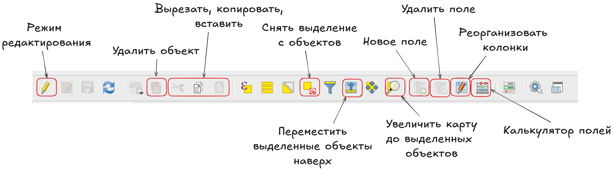

Операции пространственного анализа
Расчет площади объектов
Для расчета площади зданий воспользуемся калькулятором полей в таблице атрибутов.
Таблица атрибутов может быть открыта из контекстного меню слоя.
Расчет площади мы будем осуществлять в том слое, который вы получили по итогам перепроецирования: слой в системе координат UTM.
В открывшейся таблице атрибутов вы увидите собственную панель инструментов, на которой вам нужен калькулятор полей.

В открывшемся окне калькулятора полей вам нужно создать новое поле с типом данных “десятичное число”, в которое будет записан ваш результат.
Для расчета площади необходима будет одна из функций из группы Геометрия: area().
Само выражение:
area ($geometry)Что значит аргумент $geometry в скобках?
Это говорит о том, что для расчета будет использована не какая-то конкретная геометрия одного объекта, а все геометрии слоя.
Обратите внимание, что у нас есть две функции для расчета площади:
$area- расчет площади осуществляется в системе координат проекта на эллипсоиде;area()- расчет площади осуществляется в системе координат слоя на плоскости.
Мы используем здесь второй вариант, так как нам необходим расчет именно в системе координат слоя. Для этого мы его и перепроецировали.
В результате вычисления вы получите новое поле, в которое будет записана площадь.
В нашем случае площадь будет рассчитана в квадратных метрах, так как мы использовали систему координат слоя, в которой единицами измерения являются метры.
Это площадь застройки здания, то есть площадь по контуру первого этажа.
Вы можете аналогично рассчитать периметр здания, воспользовавшись функцией perimeter.
Общая площадь здания может быть рассчитана как произведение уже рассчитаной вами площади и количества этажей.
Вы можете указать это выражение в свойствах слоя в пункте Формы полей, тогда при создании нового объекта площадь для него будет рассчитаваться автоматически.
Это будет работать для любого вашего вычисляемого поля.
Расчет коэффицента застройки
Для расчета коэффициента застройки здесь использован слой кварталы, доступный по ссылке в папке с примерами исходных данных https://disk.yandex.ru/d/vd3vjPY6mfZC2Q
Что такое коэффициент застройки?
Это отношение площади, занятой зданиями, к общей площади квартала или иной территориальной единицы.
\[ Коэффициент\space застройки = \dfrac{Площадь\space здания}{Площадь \space квартала} \]
Здесь используется площадь здания по наземному контуру, то есть по первому этажу.
Использование пространственного объединения
Наиболее просытм способом расчета здесь будет использование одной из функций Панели инструментов анализа - Объединение атрибутов по расположению (сводка). Эта функция позволяет присваивать одним векторным объектам агрегированное значение атрибута других векторных объектов на основе их расположения относительно друг друга.
Как вы наверняка заметили у нас есть два варианта этой функции: просто Объединение атрибутов по расположению и Объединение атрибутов по расположению (сводка).
Первая из них присваивает значение атрибута одних векторных объектов другим на основе их взаимного расположения относительно друг друга. Например, у нас есть слой со зданиями и слой с магазинами, у которых есть атрибут с названием, мы можем с использованием этой функции присвоить зданию название магазина, который в нем расположен.
Сводка позволяет получить не просто значение атрибута, а его статистическую сводку (среднее, медиану, максимальное и минимальное значения и прочее).
В первую очередь необходимо выбрать, какой слой будет использован в качестве исходного, а из какого будут присоединены атрибуты.
В нашем случае мы будем присоединять атрибуты к объектам слоя с кварталами, а в качестве источника присоединяемых атрибутов будем использовать здания.
При использовании этого инструмента вам не обязательно брать слои, находящиеся в одной системе координат. Здесь системы координат значений иметь не будут.
Кроме того необходимо выбрать геометрический предикат, то есть как должны быть расположены объекты присоединяемого слоя по отношению к объектам исходного слоя.
В нашем случае кварталы содержат в себе здания, то есть нужный нам предикат - содержит.
Далее необходимо выбрать поле для составления сводки. Если вы этого не сделаете, то будут использованы все поля присоединяемого слоя.
Вам необходимо выбрать поле, в котором была рассчитана площадь вашего здания.
Для возврата обратно в основное окно инструмента нужно нажать на кнопку .
Если вы не выберете сводку для расчета, то инструмент попытается рассчитать все сводки, которые сможет.
Нам с вами нужна суммарная площадь зданий в каждом квартале.
Что значит параметр Отбросить записи, которые не могут быть объединены? Если вы поставите напротив него галочку, то при объединении объектов у вас в итоговый слой не попадат кварталы, в которых нет ни одного здания, то есть те объекты исходного слоя, для которых не нашлось соответствия в слое присоединяемом.
Обратите внимание, что вам снова предалагают сохранить результат в качестве временного слоя. Вы можете выбрать опцию сохранить в файл.
Перед тем, как выполнять эту операцию, не забудьте сохранить изменения в вашем слое с кварталами, так как, если вы этого не сделаете, у вас будет пустой атрибут fid, что приведет к ошибке в расчетах.
Скорее всего при выполнении расчетов вы увидите предупреждение о том, что у вашего слоя нет пространственного индекса и это может привести к более медленным расчетам.
Это влияет только на скорость выполнения операции.
В итоге вы получите новый слой, который выглядит как ваш исходный слой с кварталами, но в атрибутивной таблице которого содержится поле с суммарной площадью зданий внутри квартала.
Далее вы можете воспользоваться калькулятором полей для того, чтобы рассчитать коэффициент застройки квартала.
"площадь_sum" / area( $geometry) * 100Использование функций агрегирования
Тот же самый расчет можно осуществить сразу в таблице атрибутов ваших кварталов в два или даже один шаг.
Для этого воспользуемся функцией агрегирования aggregate, которая возвращает агрегированное значение с использованием объектов другого слоя.
Эта функция является очень гибкой и фактически заменяет оба упомянутых выше инструмента Объединение атрибутов по расположению и Объединение атрибутов по расположению (сводка).
aggregate('apartments_UTM_bc6f07c9_7eab_4ca8_87d2_c2e029436076',
aggregate:='sum',expression:="площадь",
filter:=contains(geometry(@parent),@geometry))Если вы копируете выражение, то не забудьте поменять название слоя и поля для агрегирования на свои.
Рассмотрим функцию подробнее.
Первым аргументом функции указывается название слоя, который будет использоваться для агрегирования (присоединяемый слой). Проще всего выбрать нужный вам слой двойным кликом в группе Слои карты (аналогично тому, как вы выбираете название поля для расчетов в калькуляторе полей).
Далее идет указание того, какой тип агрегирования должен быть использован. У нас с вами - это sum, то есть сумма.
Следующий аргумент - expression, который указывает, какое поле необходимо агрегировать. Здесь вам нужно будет прописать название поля самостоятельно.
Обратите внимание, что в этой функции название поля указывается в двойных кавычках, а название слоя для агрегирования - в одинарных.
Последний используемый нами аргумент функции -filter предназначен для фильтрации объектов, то есть здесь он будет указывать на пространственные отношения между нашим исходным слоем и присоединяемым. geometry(@parent) в данном случае указывает на геометрию нашего исходного слоя, а @geometry - на геометрию присоединяемого слоя.
Не забудьте в функции заменить название слоя на ваше (первый аргумент в скобках) и название поля на то, которое у вас (в двойных кавычках после аргумента expression.
Возможно для выполнения расчета придется немного подождать, потому что использование агрегирования здесь довольно трудоемко.
В результате вы получите новый атрибут со значением суммарной площади зданий в нем.
Далее аналогично предыдущему разделу вы можете рассчитать коэффициент застройки с использованием калькулятора полей.
Для проверки можете сравнить между собой два результата.
На самом деле здесь вы могли бы выполнить все в один этап, просто подставив в калькулятор полей вместо поля с суммарным значением площади зданий выражение агрегирования.
Попробуйте самостоятельно по аналогии рассчитать коэффициент плотности застройки:
\[ Коэффициент\space плотности\space застройки = \dfrac{Общая\space площадь\space здания}{Площадь \space квартала} \]
Создание буферных зон
Перед тем, как строить буферные зоны объектов, следует их перепроецировать в плоскую прямоугольную систему координат.
Буферная зона - это область на карте, каждая точка внутри которой находится в пределах заданного расстояния от исходного объекта.
Буферные зоны - это один из тех инструментов, которые зависимы от системы координат исходного слоя. То есть размер буфера может быть задан только в единицах измерения слоя.
Для создания буферных зон есть одноименный инструмент Буферизация в панели инструментов анализа.
Как видите, у нас есть несколько очень похожих инструментов, мы с вами будем пользоваться самым простым из них.
Что же делают остальные?
буфер переменной ширины - размер буферной зоны будет зависеть от величины какого-то показателя;
множественный буфер - создание сразу нескольких буферных зон с определенным шагом по расстоянию;
конические буферы (на самом деле клиновидные) - буфер для линейного объекта с разными значениями размера в начале и конце линии;
односторонний буфер - создание буфера только с одной стороны линейного объекта;
создать клиновидные буферы - создание буферов в форме сектора круга от точечных объектов.
В качестве размера буферной зоны мы воспользуемся основным градостроительным нормативом доступности для школ - 500 метров до жилых зданий.
Если вы использовали другие объекты, то вы можете взять другое расстояние.
Например, для детских садов зона доступности - 300 метров, для поликлиник - 1000 метров.
Для объектов коммерческой инфраструктуры нормативов нет, но вы можете взять свое произвольное значение.
Так как в нашем случае буферные зоны строятся для точечных объектов, то основным параметром будет расстояние - размер зоны.
Также роль будет играть параметр Выполнить слияние результирующих полигонов: при его выборе все полученные полигоны будут объединены в один объект.
Если вы хотите сразу сохранить свой слой без создания временного файла, то вы можете нажать на кнопку и выбрать пункт Сохранить в файл, после чего выбрать место для сохранения и указать имя файла.
В итоге вы увидите новый слой в панели слоев и его отображение на карте.
Поиск объектов по расположению
Определение зданий, попавших в границы буферных зон
Далее мы можем осуществить поиск домов, которые попадают в заданные области обслуживания.
Для поиска объектов есть группа инструментов Вектор — Выборка.
Часть инструментов в ней начинается со слова Выбрать (Выделить), а часть - Извлечь. Разница между ними в том, что в первом случае объекты просто выделяются в исходном слое, а во втором - объекты, соответствующие заданным условия, извлекаются в новый слой.
Краткое описания инструментов:
выбрать/извлечь по атрибуту - поиск объектов по значению одного из атрибутов;
выбрать/извлечь по выражению - поиск объектов по значениям нескольких атрибутов одновременно;
выбрать/извлечь по пространственному отношению - поиск объектов по их расположению относительно объектов другого слоя;
выделить/извлечь в пределах расстояния - поиск объектов в пределах заданного расстояния от других объектов;
случайное выделение/случайное извлечение - случайная выборка объектов из слоя (заданного числа объектов или заданного процента объектов);
случайное выделение в подмножествах/случайное извлечение в подмножествах - сначала слой разбивается по категориям по одному из атрибутов, потом из каждой категории извлекается заданное число или заданный процент объектов.
Нам нужно определить, какие здания попадают в буферные зоны, поэтому нужно воспользоваться выбрать\извлечь по пространственному отношению.
Для выбора объектов нужно сначала указать в каком слое осуществляется поиск (слой со зданиями), геометрический оператор (как объекты расположены относительно объектов другого слоя) и слой для сравнения (буферные зоны). Геометрические операторы в данном случае лучше выбирать Пересекает и Находится внутри.
По результатам извлечения вы получите новый слой, который будет содержать только здания, удовлетворяющие заданным условиям.

Инструмент Выбрать по расположению работает аналогично, но результатом у вас будет не просто новый слой, а выделенный набор объектов в текущем слое.
Такеж вы можете попробовать найти здания в пределах заданного расстояния от школ при помощи инструментов Выделить в пределах расстояния/Извлечение в пределах расстояния.
Однако следует помнить, что расстояние будет определяться в системе координат проекта, поэтому будет отличаться от того, что получено при помощи буферных зон.
Расчет количества доступных школ
Рассчитаем число доступных школ для каждого из наших зданий с использованием выражения агрегирования.
aggregate( 'school_bufer_f66eb7f4_5fbc_470a_acf4_0fd3649f38e1', aggregate:='count',expression:="osm_id", filter:=within(geometry(@parent),@geometry))Как видите, выражение очень похоже на то, что мы уже использовали, меняются только некоторые аргументы.
Во-первых, используется другой тип агрегирования - count, то есть подсчет количества; во-вторых, используется другое выражение фильтрации - в этом случае мы ищем объекты исходного слоя, попавшие внутрь буферных зон.
По итогам расчета получен новый атрибут, в котором указано количество школ, находящееся в радиусе доступности.
Определение ближайшей школы к зданию
with_variable('nearnp', array_first(overlay_nearest('Населенные пункты',@feature)), 'в ' || round(distance($geometry,geometry(@nearnp))/1000,2) || ' км.' || ' на ' || array_get( array('C','СВ','СВ','В','В','ЮВ','ЮВ','Ю','Ю','ЮЗ','ЮЗ','З','З','СВ','СЗ','СЗ','С'), floor( degrees( azimuth( end_point(shortest_line($geometry,geometry(@nearnp, start_point(shortest_line( $geometry,geometry(@nearnp)))))/22.5) ) || ' от н.п.' ||attribute(@nearnp,'NAME') )Оверлейные операции
| Название | Описание | Логический оператор | Графическоепредставление |
| Пересечение | Результат включает в себя общие части объектов разных слоев. Например, какие области попадают в зону затопления и зону застройки |
AND | |
| Разница | Результат включет в себя только части объектов одного слоя, не совпадающие с объектами другого слоя. Например, какие области попадают в зону затопления, но не попадают в зону застройки? |
NOT |  |
| Объединение | Результатом будут являться части объектов обоих слоев, как совпавшие, так и нет. Другими словами результирующие объекты будут соответствовать хотя бы одному из условий. В этом случае дополнительно происходит рассечение объектов одного слоя объектами другого слоя. Например, какие области попадают или в зону затопления или в зону застройки. |
OR |  |
| Симметрическая разность | Результат будет включать в себя несовпадающие части объектов разных слоев. Например, какие области не попадут ни в зону затопления, ни в зону застройки? |
XOR |  |

Сетевой анализ
К сожалению, в связи с обновлением библиотек и модулей, эти операции могут работать не у всех.
Если у вас стабильная версия QGIS и вы работаете в операционной системе Windows, то у вас будет полноценно работать нужный модуль.
Сноски
Типы пространственных отношений https://fishy-bottle-aa2.notion.site/1bcf188baff3804c9c26f59995850700↩︎